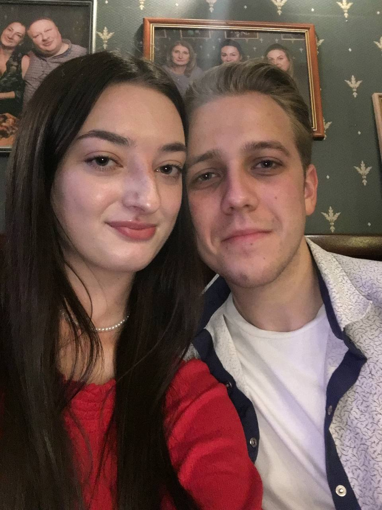

Перша зустріч
Зустріч із тобою - омріяний момент, заради якого дивишся на своє минуле і кажеш: "як добре, що все сталося саме так". Твоя краса приголомшила мене, твій голос змусив мене закохатися ще раз відразу після того, як я закохався у твою вроду.
"Боже... яка ж вона гарна", - подумав я
